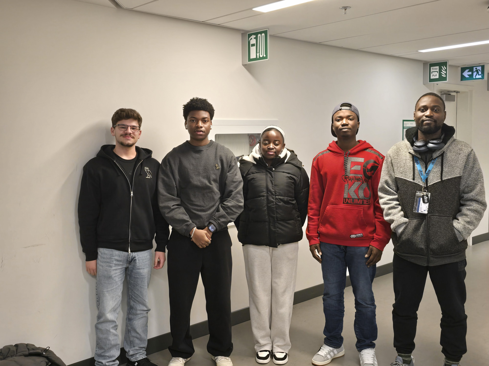

À propos de notre équipe
Nous sommes une équipe passionnée composée de cinq membres : Anthoni, Abdou, Naomi, Adrien et Steven. Ensemble, nous avons imaginé Cruxix, une voiture futuriste capable de conduire de façon totalement autonome, combinant design innovant, intelligence artificielle et respect de l'environnement.


Anthoni
Responsable du design et de l’esthétique du véhicule.

Abdou
Développeur principal en IA et systèmes embarqués.
Naomi
Spécialiste en expérience utilisateur et communication.
Adrien
Expert en intégration électronique et hardware.
Steven
Chef de projet et coordinateur technique.